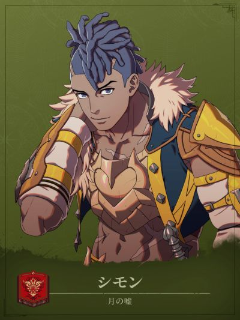

COMPANION DOSSIER
希蒙
シモン · 月之谎
检索别名：希蒙
喜欢什么，送什么
蔬菜
喜欢的东西：殊死战斗、家乡菜、拈花惹草
查看送礼原文与例外 →第一部 · 各路线加入条件
- 凯伊线
- 3S / 8R ・支付 500G，掷硬币选择「裏」
- 迪托利希线
- 3S / 7R ・支付 500G，掷硬币选择「裏」
- 赛奥朵拉线
- 3S / 7R ・支付 500G，掷硬币选择「裏」
- 蕾达线
- 3S / 6R ・支付 500G，掷硬币选择「裏」
S = 支援等级 · R = 名声等级 · — = 无法招募
查看招募原文与附加说明 →交涉要准备什么
金钱＋选项支付 500G，掷硬币选择「裏」
选择反面；选错可以再付 500G 重试。不是一次付款后无限免费重试。
适用：凯伊线 / 迪托利希线 / 赛奥朵拉线 / 蕾达线
Game8 · 希蒙交涉 ↗攻略来源交叉参考 · 未作游戏内实测
怎么养，怎么转职
编辑培养建议
剑／斧单修近战，概率生还作后备
- 前期
- 入队后先选当前熟练度较高的剑或斧，沿剑客或土匪成型；预算有限不同时重练两系。出手前比较命中、伤害与攻速，留回复道具；队里已有成型的穆或古扎岚时，可先让希蒙补刀，不必争全部训练。
- 中期
- 剑系以剑B备考侍道，持剑必杀+5；斧系以斧B备考勇士，持斧命中+5。两种都适合沿原投入继续，按队伍缺必杀机会还是命中补强选择。侍道精通「残心」须必杀击倒才回复，不能把普通击杀当保底续航。
- 后期目标
- 第三部考试开放后，斧系可沿斧A备考战斗将领，剑系可沿剑A并完成マーズの依頼后转刀剑将领。已有上级职能完成任务时，先补常用武器与回复预算，再考虑新考试；换武器方向还要另算训练和装备成本。
- 考试与解锁
- 四线均须先按本线条件招募，入队等级和职业随进度变化，不必为了照抄路线退回初级。侍道／勇士需上级票证，后期两职需最上级票证；Rank是备考目标，开放状态与通过率以当前存档为准。
- 取舍与限制
- 「死にそびれ」只在HP≥2、受到致命伤害时按当前幸運%的概率留下1HP；承伤计划按不触发计算，留到1HP后不能靠它再挡下一击。Lv35的「恶运+」每次击倒敌人幸運+2，单图最多+10，地图结束即消失。先处理安全击杀，仍须避开追击、集火和危险魔法。
这些是阶段性培养方向，并非必须逐级转职的固定链。适用难度及版本未做独立实测；优先满足当前队伍缺口。
本次新增条目经过来源页面核对，未逐项游戏内实测。没有补充明细的“交涉”仍待核验，不表示没有额外要求。